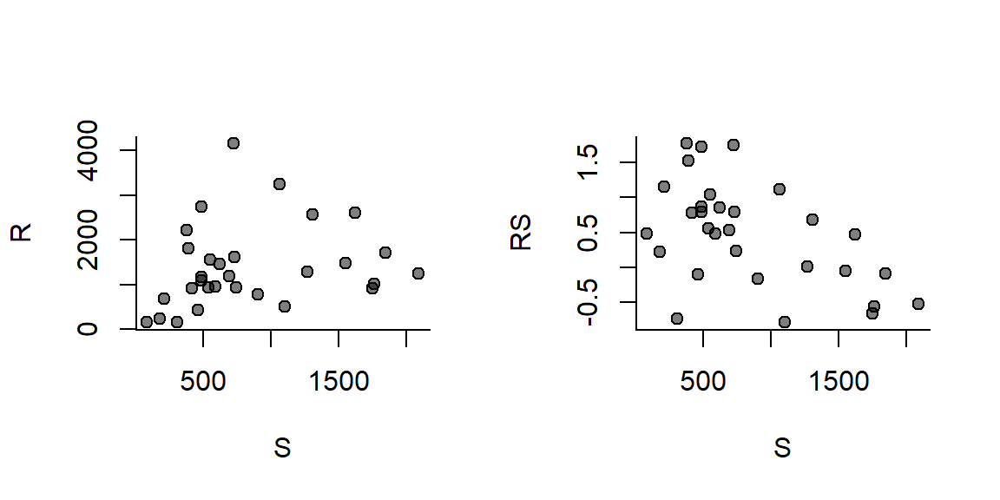
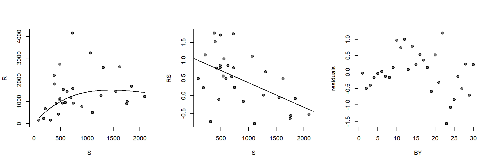
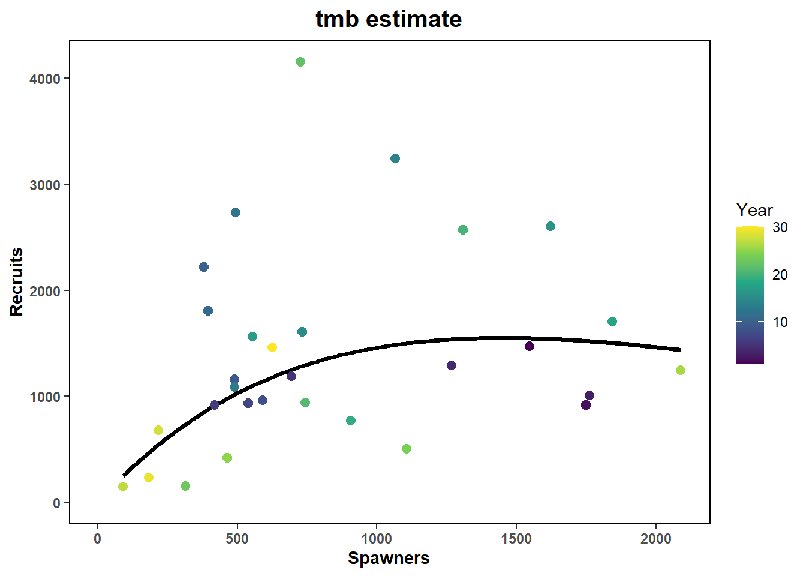
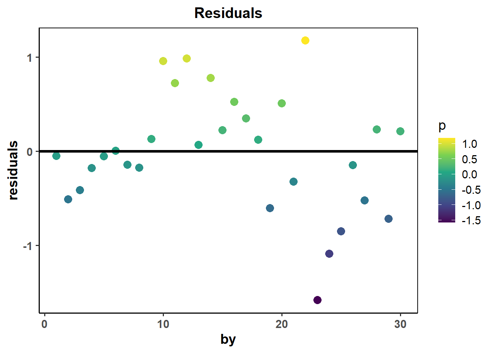
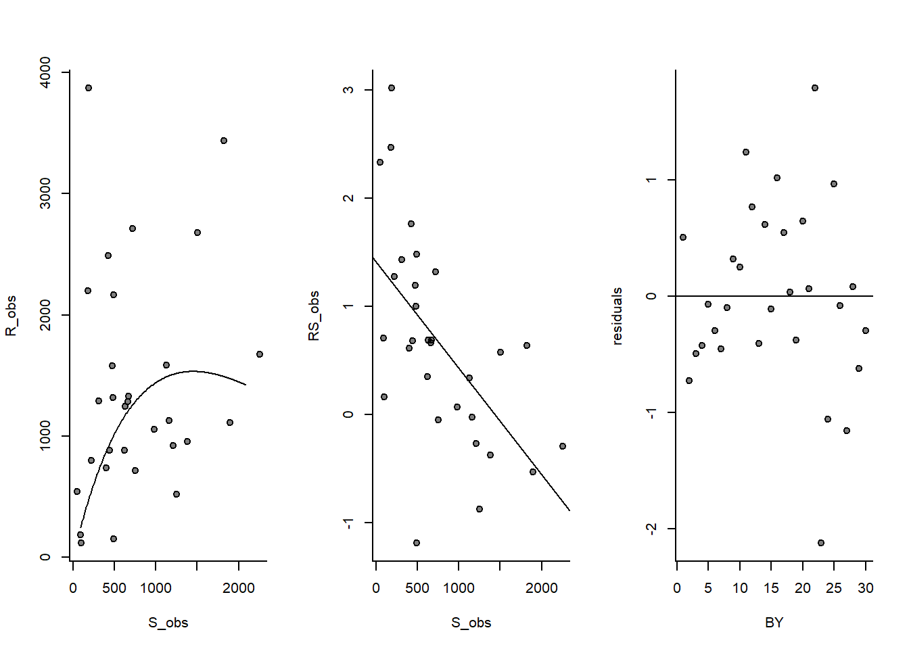
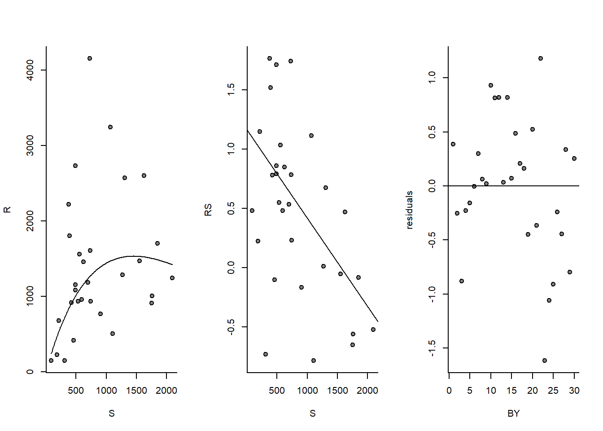

library(samEst);library(ggplot2)
#Function: this function gives a stochastic draw from a Ricker function with defined parameters
ricker_RS=function(alpha,beta,S,sigma){
RS=rnorm(1,alpha - beta*S,sigma) #this draws the realized productivity (log RS) with the specified level of error
return(RS)
}Exercise 1: Classic Ricker
1 Beginning
Make sure you’ve installed samEst by visiting ‘install_samest.R’
#E1.1: Classic Ricker
We’ll begin by simulating a spawner-recruit time-series from the Ricker function and to see how the parameters dictate this relationship, first start with these parameters:
#Key parameters: alpha, beta, and sigma
alpha<- 1.5 # productivity - usually ranges from ~ 0.5 - 3
beta<- 1/(1000) # capacity rate -often easier to conceptualize as Smax (1/beta) as its far more interpretable
sigma<- 0.6 # ranges from ~0.2 to 1.5 for most Pacific salmon stocks
Seq<-alpha/beta # equilibrium spawners - just used for the simulation start points
#Simulation parameters:
N=30 #length of time-series
L=N+4 #length of time-series +4 for starting cohorts
RS=numeric(L) #productivity in each year
S=numeric(L);S[1:4]=runif(4,Seq*0.8,Seq*1.2) #spawners in each year, we start with an initial escapement of 600 individuals
R=numeric(L) #recruits in each year
U=runif(L,0.4,0.6) #Harvest rate of cohorts with low variance
#(note U should be within the range of 0 to 1)What we are creating is a very simplified model to generate stock recruitment data. It has a fixed 4-yr return cycle and the spawners are what remains after applying the harvest rate to that cohort
for(t in 5:L){
RS[t] = ricker_RS(alpha,beta,
sigma,
S=S[t-4]) #draw productivity in each year
R[t] = exp(RS[t])*S[t-4] #transform into recruits by converting logRS to RS (recruits per spawner) times spawners
S[t] = R[t]*U[t] #escapement left after harvest
}
#Pare down the time-series and align the spawners and recruit estimates (which are currently staggered 4 years)
S = S[-((L-3):L)] #Chop off the final spawner estimate to retain just the length L
R <- R[5:L]
RS <- RS[5:L]
par(mfrow = c(1,2))
plot(R~S, bty='l', pch=21, bg=adjustcolor('black',alpha.f=0.5)) #Spawner Recruit curve
plot(RS~S, bty='l', pch=21, bg=adjustcolor('black',alpha.f=0.5)) #Spawner Recruit curve
Okay, we have our dataset - let’s try fitting a model to recover the Ricker parameters
Simplest route: good old linear regression of log(productivity)
m=lm(RS~S)
S_pred=seq(min(S),max(S),length.out=200)
pred_R=exp(m$coefficient[1]+m$coefficient[2]*S_pred)*S_pred
par(mfrow=c(1,3))
plot(R~S,bty='l',pch=21,bg=adjustcolor('black',alpha.f=0.5),xlim=c(0,max(S)),ylim=c(0,max(R))) #Spawner Recruit curve
lines(pred_R~S_pred)
plot(RS~S,bty='l',pch=21,bg=adjustcolor('black',alpha.f=0.5)) #Spawner Recruit curve
abline(m)
plot(m$residuals,bty='l',pch=21,bg=adjustcolor('black',alpha.f=0.5),xlab="BY",ylab="residuals")
abline(h=0)
How close are the parameters to their simulated value?
unname((m$coefficients[1])/alpha) #productivity[1] 0.7038136unname(abs(m$coefficients[2])/beta) #capacity rate[1] 0.6897056summary(m)$sigma/sigma #standard error (sigma)[1] 1.065523#As a fraction of the true value - eg. 1.17 = 17% higher, 0.91 = 9% lowerNow, fit in samEst - we’ll stick with TMB over Stan for most of this, but look to the final section for all of the examples for fitting these same models in Stan:
df=data.frame(S=S,R=R,logRS=RS,by=seq(1:30)) #Make a dataframe with the required information for samEst
#That is Recruits (R), Spawners (S), productivity (logRS), and brood years (a vector of years = 1998, 1999,..., etc)
m_tmb <- samEst::ricker_TMB(data=df, priors=1) #TMB estimate, priors = 1 means yes include priors for estimate (recommended)outer mgc: 19.55579
outer mgc: 6.160293
outer mgc: 4.253459
outer mgc: 0.1713646
outer mgc: 0.02342108
outer mgc: 0.03352774
outer mgc: 0.0162792
outer mgc: 0.007041173
outer mgc: 0.002093545
outer mgc: 0.0004207334
outer mgc: 2.705122e-05
outer mgc: 2.705122e-05
outer mgc: 0.08139014
outer mgc: 0.08133934
outer mgc: 0.04645294
outer mgc: 0.04646059
outer mgc: 0.06146778
outer mgc: 0.06154711
outer mgc: 662.5542 #We can draw out the MLE approximation estimates:
m_tmb$alpha #productivity [1] 1.066049m_tmb$beta #capacity rate[1] 0.0006889066m_tmb$sig #sigma[1] 0.6132767#How close are the estimated parameters? expressed as a proportion
m_tmb$alpha/alpha #productivity [1] 0.7106995m_tmb$beta/beta #capacity rate[1] 0.6889066m_tmb$sig/sigma #sigma[1] 1.022128Let’s quickly visualize the fit - using some standardized S-R plots from the sr_plot function in samEst:
samEst::sr_plot(df=df,mod=m_tmb,type='static',form='tmb',title='tmb estimate')
Now, return to the beginning of Exercise 1.1 and try changing the parameters (ie. alpha, beta, sigma) or the conditions of the S-R time-series such as length of series, harvest rate. Re-run these sections to visualize changes in the curves and data and how this affects the precision of the parameter estimates.
df$residuals<-m_tmb$residuals
ggplot(df, aes(by, residuals))+
geom_point(aes(colour = residuals), stroke=2)+
geom_hline(yintercept=0,linewidth=1.3)+
scale_colour_viridis_c(name='p')+
ggtitle("Residuals")+
theme_classic(14)+
theme(panel.background = element_blank(),strip.background = element_rect(colour=NA, fill=NA),panel.border = element_rect(fill = NA, color = "black"),
strip.text = element_text(face="bold", size=12),
axis.text=element_text(face="bold"),axis.title = element_text(face="bold"),plot.title = element_text(face = "bold", hjust = 0.5,size=15))
#E1.2: Sampling error
The previous simulation is a bit overly optimistic. It assumes that we know with full accuracy the true spawners and recruits generated under that model in a given year. Of course, the reality is that our estimates often have high levels of sampling error - we’re going to incorporate that and see how it affects our inferences.
#Let's start by assigning the level of sampling/measurement error
CV_S=0.3 #error in spawner estimates
CV_R=0.2 #error in recruit estimates
#Try adjusting the CV to different levels (in reality we would... hope.. it usually falls in the 0.1 to 0.3 realm)
#Let's add in sampling error to just our estimate of spawners returning to natal streams
S_obs=rnorm(length(S),S,CV_S*S)
#And recruits
R_obs=rnorm(length(R),R,CV_R*R)
#Similarly this will change our estimates of productivity from the sampled data:
RS_obs=log(R_obs/S_obs)
#Plot out S-R fits
m=lm(RS_obs~S_obs)
par(mfrow=c(1,3))
plot(R_obs~S_obs,bty='l',pch=21,bg=adjustcolor('black',alpha.f=0.5)) #Spawner Recruit curve
lines(pred_R~S_pred)
plot(RS_obs~S_obs,bty='l',pch=21,bg=adjustcolor('black',alpha.f=0.5)) #Spawner Recruit curve
abline(m)
plot(m$residuals,bty='l',pch=21,bg=adjustcolor('black',alpha.f=0.5),xlab="BY",ylab="residuals")
abline(h=0)
unname((m$coefficients[1])/alpha) #productivity[1] 0.9440014unname(abs(m$coefficients[2])/beta) #capacity rate[1] 0.984465summary(m)$sigma/sigma #standard error (sigma)[1] 1.33009Adjust the coefficient of variation (CV) to see how this influences estimates for the known parameters.
What if the sampling error changes over time - e.g., change in methodology
CV1=0.4 #coefficient of variation - period 1
CV2=0.1 #coefficient of variation - period 2
P1=round(N*0.3) #duration of sampling period 1
#generate observations for each period:
S_obs[1:P1]=rnorm(P1,S[1:P1],CV1*S[1:P1]) #Estimates in the first sampling period
S_obs[c(P1+1):N]=rnorm(N-P1,S[c(P1+1):N],CV2*S[c(P1+1):N]) #Estimates in the second sampling period
R_obs[1:P1]=rnorm(P1,R[1:P1],CV1*R[1:P1]) #Estimates in the first sampling period
R_obs[c(P1+1):N]=rnorm(N-P1,R[c(P1+1):N],CV2*R[c(P1+1):N]) #Estimates in the second sampling period
RS_obs=log(R_obs/S_obs)
#Plot out S-R fits
m=lm(RS_obs~S_obs)
par(mfrow = c(1,3))
plot(R~S, bty='l', pch=21, bg=adjustcolor('black',alpha.f=0.5)) #Spawner Recruit curve
lines(pred_R~S_pred)
plot(RS~S,bty = 'l',pch = 21,bg = adjustcolor('black', alpha.f = 0.5)) #Spawner Recruit curve
abline(m)
plot(m$residuals, bty = 'l', pch = 21, bg = adjustcolor('black', alpha.f = 0.5), xlab = "BY", ylab = "residuals")
abline(h = 0)
unname((m$coefficients[1])/alpha) #productivity[1] 0.7781286unname(abs(m$coefficients[2])/beta) #capacity rate[1] 0.746015summary(m)$sigma/sigma #standard error (sigma)[1] 1.089443Try varying the coefficient of variation.
What can you conclude about how sampling error influences parameter estimates?
#E1.3: Reference points
Ultimately these parameters from the Ricker curve are important for estimating stock reference points (more on this later this week… but here is the quick description)
Smax - Spawner abundance that maximizes surplus production (AKA production capacity)
Simply the inverse of the per capita density-dependence parameter (AKA capacity rate parameter)
Smax = 1/beta
Smax[1] 1000Smsy - Spawner abundance that maximizes sustainable yield. Note the lambert function allows for an explicit solution for calculating Smsy (Scheuerell 2016 PeerJ)
Smsy = (1 - gsl::lambert_W0(exp(1 - alpha)))/beta
Smsy[1] 595.3262Umsy - the corresponding harvest rate that would achieve Smsy (under equilibrium conditions)
Umsy = 1-gsl::lambert_W0(exp(1-alpha))
Umsy[1] 0.5953262Check how estimated parameters relate to the real ones from your simulation:
Smax_obs=1/-m$coefficients[2]
Smax_obs S_obs
1340.456 Smax[1] 1000Smax_obs/Smax S_obs
1.340456 Smsy_obs=(1 - gsl::lambert_W0(exp(1-m$coefficients[1])))/-m$coefficients[2]
Smsy[1] 595.3262Smsy_obs(Intercept)
658.5641 Smsy_obs/Smsy(Intercept)
1.106224 Umsy_obs=1-gsl::lambert_W0(exp(1-m$coefficients[1]))
Umsy[1] 0.5953262Umsy_obs(Intercept)
0.4912987 Umsy_obs/Umsy(Intercept)
0.8252597